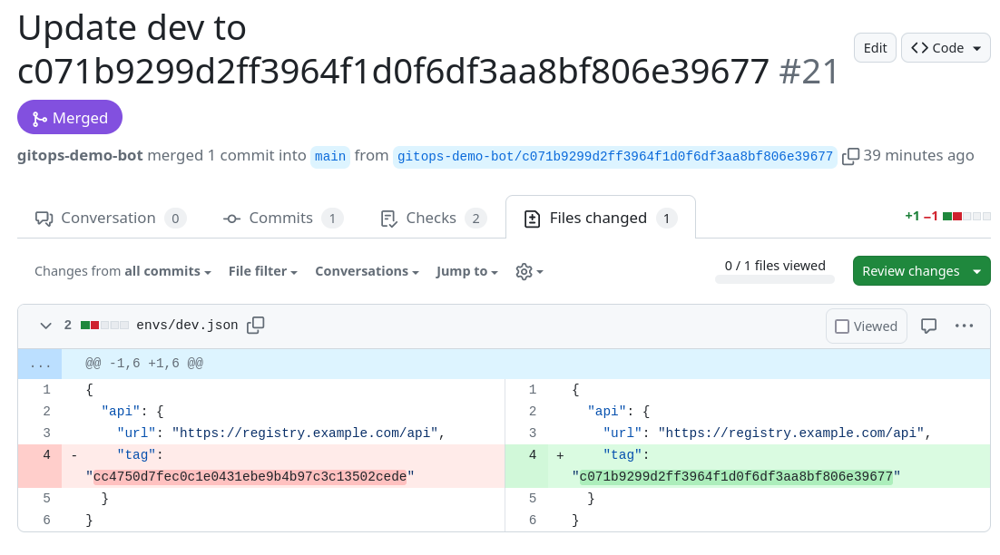
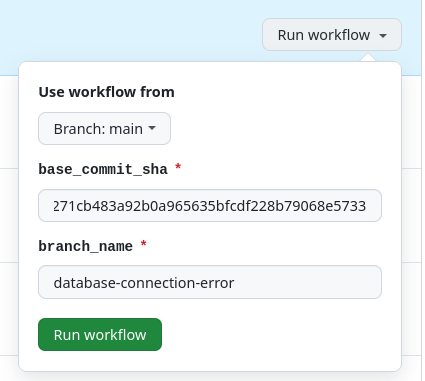
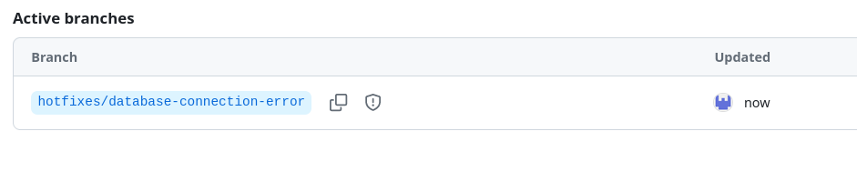
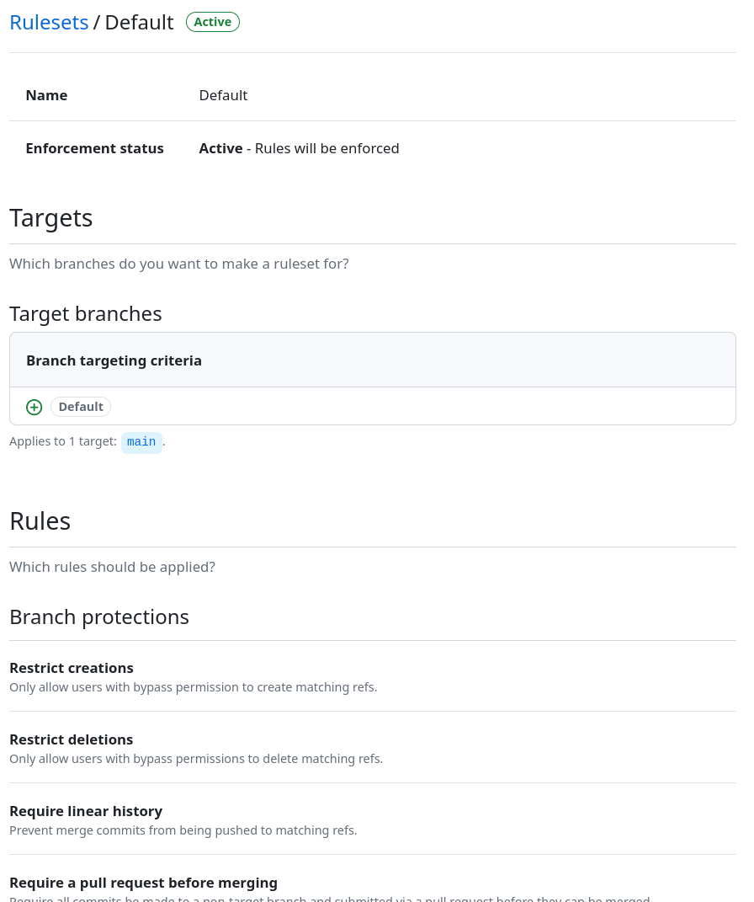

Building a GitOps CI/CD Pipeline with GitHub Actions (SOC 2)
April 2024
This guide presents a simple and developer-friendly GitOps-based CI/CD pipeline built on GitHub Actions, designed for SOC 2 compliance. Having successfully implemented this approach numerous times, I'm sharing an illustrative version for reference. You can explore a working implementation on your own on GitHub (https://github.com/cicd-excellence), or continue reading for a step-by-step breakdown.
Why I like this architecture:
- It's simple
- It has a great developer experience
- It's SOC 2 compliant
Architecture Overview
This CI/CD pipeline has two git repositories:
- App repo: Houses the application code and builds artifacts (Docker images, tarballs) for various environments.
- Infra repo: Defines the infrastructure resources and their desired configurations for each environment (dev, staging, prod)
Both repositories follow trunk-based development with a single long-lived branch, the main branch. Environments are managed through directories within the source code.
All changes, including rollbacks and hotfixes, go through pull requests, ensuring a controlled and auditable deployment process.
Publish Flow (App Repo)
Let's break down the steps of the publish flow:
- A developer opens a pull request against the main branch, proposing changes to the app code.
- Automated tests are executed and the results are reported back to the pull request. If these tests fail or are absent, the pull request cannot be merged.
- Another developer reviews and approves the pull request.
- The developer merges the pull request into the main branch.
- Artifacts are built and published, with clear traceability provided through commit ID tagging.
- To maintain continuous delivery to the dev environment, a pull request to the infra repository is automatically opened and merged by a bot, thereby triggering the deploy flow.
Trigger
The publish workflow (.github/workflows/publish.yml) in the app repo runs on pull requests and on pushes to the main branch (after a pull request has been merged):
name: Main
on:
pull_request:
branches:
- main
- hotfixes/*
push:
branches:
- main
- hotfixes/*
For now, let's set aside the hotfix scenario as we'll address it later.
Setup Job
The first job, the setup job, configures two variables based on the context:
setup:
runs-on: ubuntu-22.04
outputs:
open_infra_pr: ${{ steps.setup.outputs.open_infra_pr }}
publish: ${{ steps.setup.outputs.publish }}
steps:
- name: Setup
id: setup
run: |
if [[ "${{ github.event_name }}" == "push" ]]; then
echo "publish=true" >> "$GITHUB_OUTPUT"
if [[ ${{ github.ref }} == refs/heads/main ]]; then
echo "open_infra_pr=true" >> "$GITHUB_OUTPUT"
fi
fi
We only want to publish artifacts when changes are merged into the main branch or a hotfix branch (which we'll address later). So, we refrain from publishing artifacts while a pull request is in progress. Instead, we wait until changes are successfully merged into the main branch (or a hotfix branch).
To achieve this, we examine the event type. If it's a push event (indicating changes are being pushed to a branch after a pull request has been merged), we set the publish flag to true. Additionally, if the push is to the main branch, we automatically open a pull request in the infra repository to deploy to the dev environment, setting the open_infra_pr flag to true.
API Job
The subsequent job in the workflow is the api job, responsible for handling all aspects related to the API, including executing automated tests and publishing artifacts if necessary (when publish is true).
The api job in the publish workflow calls the api workflow.
api:
needs: [setup]
uses: ./.github/workflows/api.yml
with:
publish: ${{ needs.setup.outputs.publish }}
Here's the api workflow (.github/workflows/api.yml):
name: API
on:
workflow_call:
inputs:
publish:
required: true
type: string
jobs:
api:
runs-on: ubuntu-22.04
steps:
- name: Checkout
uses: actions/checkout@v4
- name: Install
run: |
cd projects/api
make install
- name: Run tests
run: |
cd projects/api
make test
- name: Publish
if: inputs.publish == 'true'
run: |
echo "Pretending publishing the API artifact with SHA $GITHUB_SHA."
The final step of this workflow simulate the publishing process. In reality, this could involve publishing a Docker image to a Docker registry, for instance.
In scenarios where other apps, such as a web app, are present, a similar workflow called web-app could be created to perform analogous actions for the web app.
Infra Job
Returning to the publish flow, the next job is infra:
infra:
needs: [api, setup]
if: needs.setup.outputs.open_infra_pr == 'true'
uses: ./.github/workflows/infra.yml
secrets:
GITOPS_DEMO_BOT_GITHUB_TOKEN: ${{ secrets.GITOPS_DEMO_BOT_GITHUB_TOKEN }}
It calls the infra workflow (.github/workflows/infra.yml):
name: Infra
on:
workflow_call:
secrets:
GITOPS_DEMO_BOT_GITHUB_TOKEN:
required: true
jobs:
infra:
runs-on: ubuntu-22.04
steps:
- name: Checkout
uses: actions/checkout@v4
- name: Open Infra PR
env:
GH_TOKEN: ${{ secrets.GITOPS_DEMO_BOT_GITHUB_TOKEN }}
run: |
echo "Opening PR in infra repo to update dev to $GITHUB_SHA"
TAG=$GITHUB_SHA bash scripts/open_infra_pr.sh
The open_infra_pr.sh script called at the end of the workflow opens and merges a pull request in the infra repo with the help of a bot:

The bot is just a regular GitHub account, named GitOps Demo Bot, with access to both the app and infra repositories. It also has special permissions to bypass certain branch protection rules, but we'll talk more about that later.
Here's the open_infra_pr.sh script:
#!/bin/bash
BRANCH_NAME=gitops-demo-bot/$TAG
git clone https://$GH_TOKEN@github.com/cicd-excellence/infra.git
cd infra
git config --global user.email ""
git config --global user.name "GitOps Demo Bot"
git checkout -b $BRANCH_NAME
TAG=$TAG make dev.update
git add .
git commit -m "Update dev to $TAG"
git push origin $BRANCH_NAME
gh pr create \
--body "" \
--title "Update dev to $TAG" \
--head "$BRANCH_NAME" \
--base "main"
gh pr merge --admin --rebase
Deploy Flow (Infra Repo)
Let's dive into the deploy process within the infra repo. This flow mirrors the publishing process in the app repo, but instead of publishing artifacts, it deploys them to environments.
- A developer opens a pull request against the main branch.
- Automated tests run and report results back to the pull request. Failure (or absence) of these tests blocks the pull request from merging.
- Another developer reviews and approves the pull request.
- The developer merges the pull request into the main branch.
- Environments are updated accordingly.
Trigger
The deploy workflow (.github/workflows/deploy.yml) in the infra repo runs on both pull requests and on pushes to the main branch (once a pull request has been merged):
name: Deploy
on:
pull_request:
branches:
- main
push:
branches:
- main
Setup Job
The the first job, the setup job, configures a variable based on the context:
setup:
runs-on: ubuntu-22.04
outputs:
deploy: ${{ steps.setup.outputs.deploy }}
steps:
- name: Setup
id: setup
run: |
if [[ "${{ github.event_name }}" == "push" ]] && [[ ${{ github.ref }} == refs/heads/main ]]; then
echo "deploy=true" >> "$GITHUB_OUTPUT"
fi
Test Job
The next job, the test job, runs the tests:
runs-on: ubuntu-22.04
steps:
- name: Checkout
uses: actions/checkout@v4
- name: Run tests
run: |
make test
Deploy Job
Finally, the last job in the workflow, the deploy job, updates the various environments based on the configuration. It does only so after a pull request has been merged (push event in the main branch):
deploy:
needs: [setup, test]
runs-on: ubuntu-22.04
if: needs.setup.outputs.deploy == 'true'
strategy:
matrix:
env: [dev, staging, prod]
steps:
- name: Checkout
uses: actions/checkout@v4
- name: Deploy
run: |
VERSION=$(jq -r '.api.tag' envs/${{matrix.env}}.json)
echo "Pretending to deploy ${{ matrix.env }} at version $VERSION (if it changed)"
Managing Multiple Environments
As mentioned, we don't use branches to manage different environments. They are managed through directories in the infra repository:
$ tree envs/
envs/
├── dev.json
├── prod.json
└── staging.json
For example, to promote dev to staging, we simply copy dev.json to staging.json and open a pull request. In a real-life scenario, you'd likely have multiple config files per environment, with one specifically containing artifact versions. This is the one you copy.
Push vs Pull Deployments
In this illustrative scenario, we use push-based deployment, where deployment is triggered from GitHub Actions:
echo "Pretending to deploy ${{ matrix.env }} at version $VERSION (if it changed)"
While it does nothing here, in practice, it might execute commands like terraform apply.
Alternatively, you could opt for pull-based deployment, where an agent within the infra monitors the infra repo for changes and automatically applies them. In this case, the deploy workflow might not exist, except to enforce automated tests or formatting.
Now that we've covered the successful path from change to deployment, let's explore rollback and hotfix flows.
Rollback Flow (Infra Repo)
Rolling back is a straightforward process. We simply open a pull request against the main branch in the infra repo and revert the version of the artifacts (e.g. api) to a previous version.
HotFix Flow (App Repo)
One aspect I really appreciate about this architecture is its consistency between the hotfix flow and the regular publish flow in the app repo. The only extra step needed is to initiate the creation of the hotfix branch.
- Developer triggers the hotfix flow (
.github/workflows/hotfix.yml) a. This workflow creates a newhotfixes/<branch-name>branch at the appropriate commit, serving as the new base branch. - Developer opens a pull request against the
hotfixes/<branch-name>(not against the main branch)
The remainder of the process mirrors the publish flow, as .github/workflows/publish.yml also handles branches starting with hotfixes/:
name: Publish
on:
pull_request:
branches:
- main
- hotfixes/*
push:
branches:
- main
- hotfixes/*
Following this, a developer proceeds with the deploy flow in the infra repository, updating the versions with the newly published version.
Here's the hotfix flow (.github/workflows/hotfix.yml) responsibles for creating the hotfix's base branch:
name: Hotfix
on:
workflow_dispatch:
inputs:
base_commit_sha:
required: true
type: string
branch_name:
required: true
type: string
jobs:
hotfix:
runs-on: ubuntu-22.04
steps:
- name: Checkout
uses: actions/checkout@v4
with:
ref: ${{ github.event.inputs.base_commit_sha }}
token: ${{ secrets.GITOPS_DEMO_BOT_GITHUB_TOKEN }}
- name: Create new branch
run: |
git switch -c hotfixes/${{ github.event.inputs.branch_name }}
git push origin hotfixes/${{ github.event.inputs.branch_name }}
Here's an example:

And the resulting branch created by the bot:

As a result, every merged pull request to this branch will build and publish artifacts that can be used in the infra repo.
Ruleset for Enforcing Branch Protection
Now that we've covered all the workflows, let's explore how we enforce branch protection to ensure that every change must go through a pull request, pass tests, and receive approval.
For this purpose, we utilize rulesets, the next generation of GitHub's branch protection feature.
Below is a screenshot of the ruleset applied to the app repo, available at https://github.com/cicd-excellence/app/rules/702950:

Here's a JSON export of the ruleset:
{
"id": 702950,
"name": "Default",
"target": "branch",
"source_type": "Repository",
"source": "cicd-excellence/app",
"enforcement": "active",
"conditions": {
"ref_name": {
"exclude": [],
"include": ["~DEFAULT_BRANCH"]
}
},
"rules": [
{
"type": "deletion"
},
{
"type": "non_fast_forward"
},
{
"type": "creation"
},
{
"type": "required_linear_history"
},
{
"type": "pull_request",
"parameters": {
"required_approving_review_count": 1,
"dismiss_stale_reviews_on_push": false,
"require_code_owner_review": false,
"require_last_push_approval": false,
"required_review_thread_resolution": false
}
},
{
"type": "required_status_checks",
"parameters": {
"strict_required_status_checks_policy": false,
"required_status_checks": [
{
"context": "api / api",
"integration_id": 15368
}
]
}
}
],
"bypass_actors": []
}
This ruleset ensures that on the main branch:
- Branch deletions, non-fast-forward merges, and direct commits are prohibited.
- Linear history is maintained.
- Pull requests must have at least one approving review.
- Required status checks, such as passing automated tests, are enforced.
There's a corresponding ruleset for hotfixes, with two important distinctions: the bot is permitted to bypass the ruleset's enforcement to facilitate the creation of hotfix base branches via the hotfix flow, and users are allowed to delete hotfix branches once they're no longer needed.
Conclusion
That's all for now. I hope you've found this information helpful in understanding how to implement similar deployment workflows in your projects. If you have any further questions or need clarification on any topic discussed, feel free to reach out!
Like this article? Get notified of new ones: